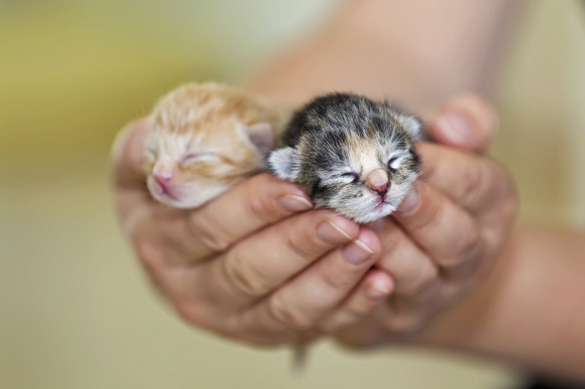
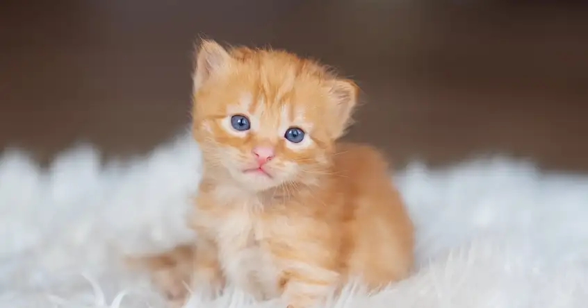
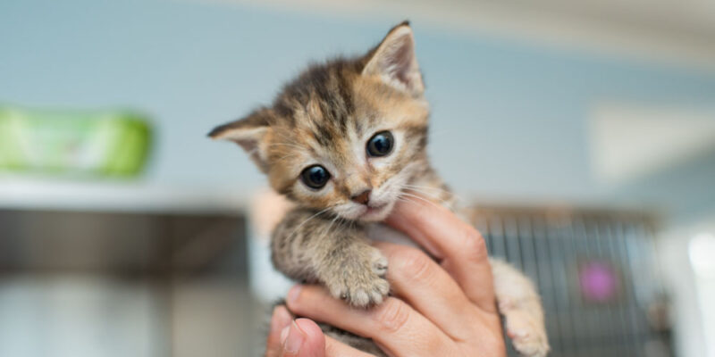
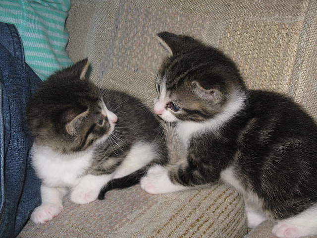
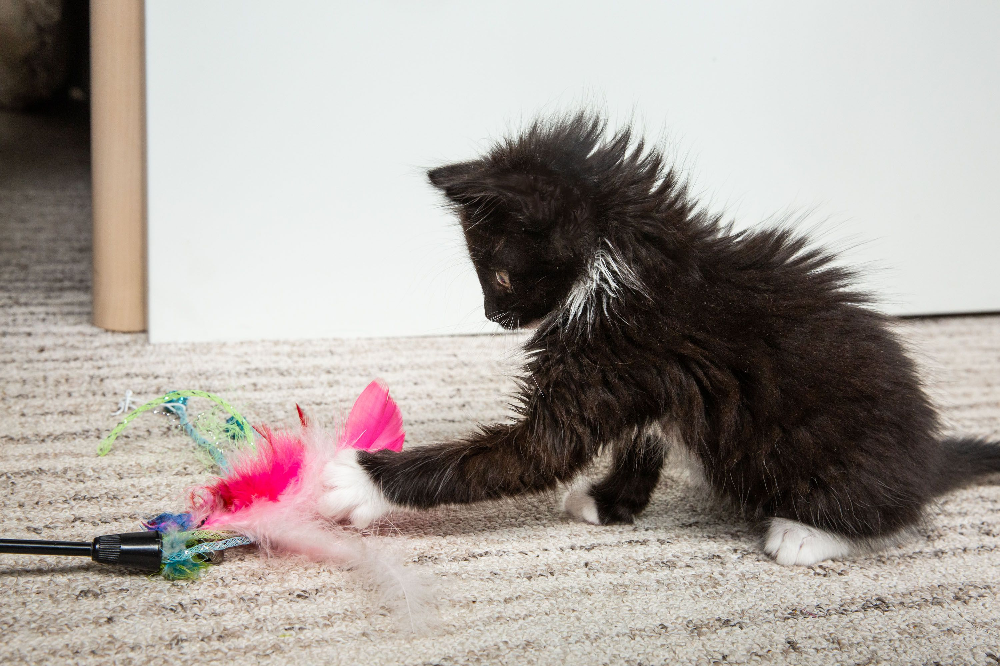
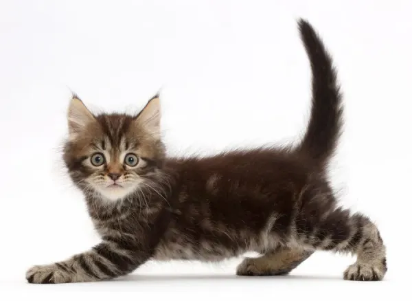
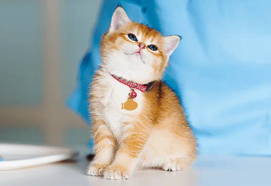
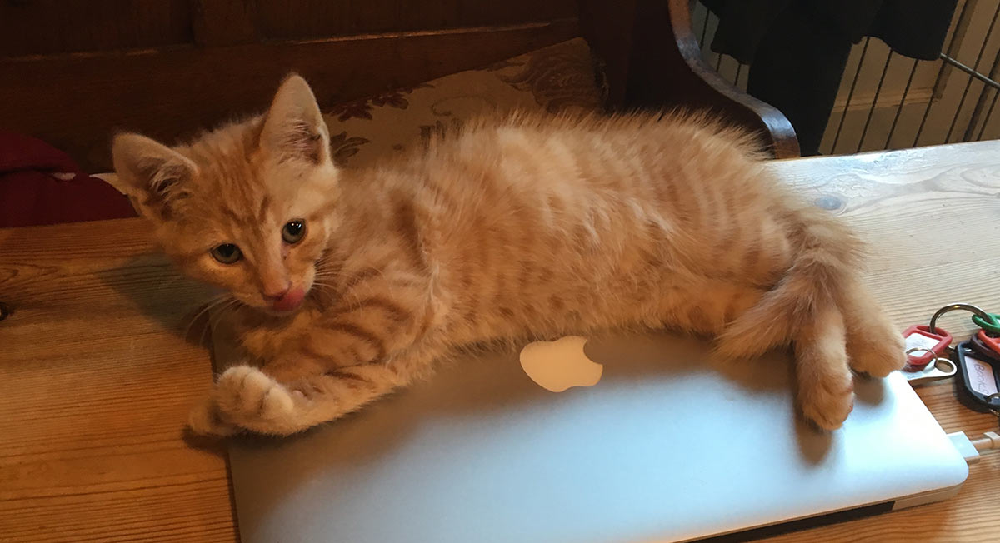

Kitten Care
Taking care of a kitten is a big responsibility. Depending on how young the kitten is, the needs change. Very young kittens need round the clock care while older kittens may not need as much care but would need to be trained to use the little box, etc.
Age and Feeding
First Week (neonatal)

As a newborn kitten, they are hopeless and rely on their mother for everything. They are not able to do anything on their own.
Feeding:
Bootle feed with kitten formula every 2 hours with the kitten laying on their stomach.
Warning: Use kitten specific bottles and only feed them with kitten formula!!
Second Week (neonatal)

The kitten would start to move around but is still pretty reliant on you for everything.
Feeding:
Bottle fed every 3 to 4 hours for kittens older than 10 days.
Third Week (neonatal)

Kittens would be moving more at this time and you can even tell the gender! At this point littler box can be introduced and kittens can start eating wet food.
Feeding:
Fed every 5 to 6 hours.
Kittens eat less frequently but eat more quantity wise.
Wet food can be mixed with kitten formula and bottle fed or given to them in a food bowl.
Fourth Week

Kittens would be moving, playing with each other at this stage, and playing with toys.
Feeding:
2 or 3 times a day which is the same feeding frequency as adult cats.
Mix in more wet food with the formula.
Once familiar with wet food, can introduce dry food mixed with formula and give water as well.
Fifth Week

The kitten's personality would be showing at this stage and they would be full of energy.
Feeding:
2 or 3 times a day.
Half a can of wet food per feeding.
Kittens could still be transitioning from formula to wet food which is fine.
Sixth Week

An important stage to socialize the kitten. Teaching the kitten how to play using toys. This stage is important to shape their behavior such as biting and scratching.
Feeding:
2 or 3 times a day.
The kittens should be eating kibble mixed with wet food. Can start separating the kibble and wet food slowly to make sure no digestive issues occur.
Seventh Week

Kittens are self-sufficient at this point. They would be very curious and very mobile.
Feeding:
2 or 3 times a day. Eating kitten kibble and wet food, whether mixed or by itself as long as the kitten is used to it to avoid digestive issues.
Eight Week

Kittens at this stage can be spayed and neutered. You can read about this more on our health page.
Feeding:
2 or 3 times a day.
Kittens should be eating just solid foods at this point.
9 to 12 Weeks
